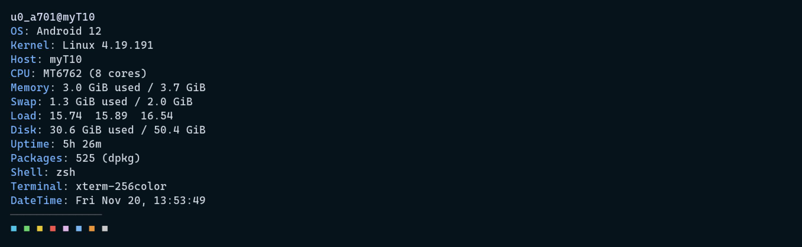

← Family hub

System · C++23 · Termux / Linux
Plusafetch
A text-only system fetch for Termux and Linux. It shows the facts, can watch them over time, and never calls home.
git clone https://github.com/Mark44928/Plusafetch.git
cd Plusafetch && ./install.sh

- ~23 mson a Helio P22 default path
- No subprocesseson the default Android path
- Watch + alertsthresholds, hooks, cooldowns
- 0.6.0offline HTML trend reports